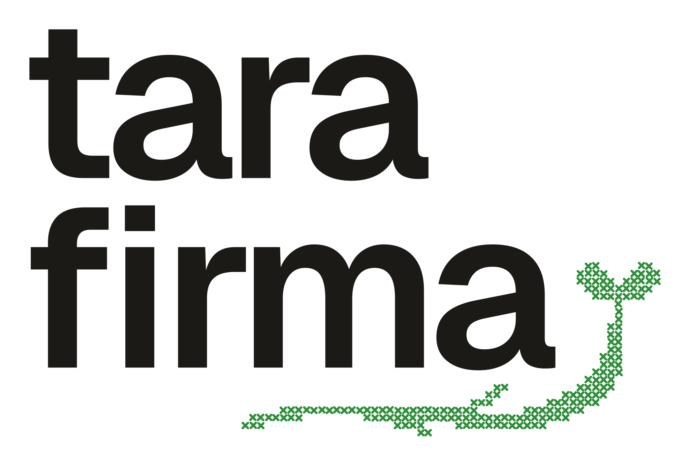

IDENTITY 02Logo rules
CLEAR SPACE, SIZE, RULESClear space
EVERY VERSION KEEPS ITS OWN ROOM
Primary
One a on every side, measured from the edge of the artwork. The a is the height of the lowercase a in the wordmark, shown boxed.

Stacked
The same unit, taken from the stacked wordmark’s own a. The two lines are never set tighter than the artwork.

Symbol
Two stitches on every side, counted on the symbol’s own grid, shown faintly behind it.
The founding mark
The swash in the logo is traced from this lettering. The original only appears whole, for the farm’s history. Firma never stands alone: it always travels with tara.
firma
Don’t use firma on its own.

Don’t use the swash without the wordmark.
Don’t shade the stitches in two tones. One flat color.
Don’t pixelate the mark or stitch the letters.
Don’t stretch, squash or slant the logo.
tara firma
Don’t retype the wordmark. Always use the artwork.
Minimum size
Primary
160 PX, 40 MM
Stacked
96 PX, 25 MM
Symbol
32 PX, 8 MM
Under 160 px the crosses blur together. The small version swaps them for solid squares.
Symbol versions
Full color
PACKAGING, SIGNAGE
Linen on field
AVATARS, STICKERS, PATCHES
One color
INK ONLY, STAMPS AND PRINT